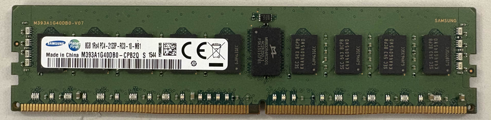

Demos
Capturing DRAM Bus Traffic Using a Logic Analyzer
We use a logic analyzer to capture DRAM bus traffic, observing reads and writes to encrypted memory belonging to SGX. The top images show our actual setup and DDR4 interposer. On the bottom we show how our setup captures a memory read operation, which consists first of a row activation, then a read command, and finally the encrypted read data itself.
Logic Analyzer Setup
DDR4 DIMM Interposer
Deterministic Encryption in Intel Total Memory Encryption
The image below demonstrates the existence of deterministic memory encryption on Intel servers supporting SGX, which allows us to build our attack. We show three writes to memory. The first writes zeros to memory, the second writes ones, and the third writes zeros again. Notice how the first and last writes result in the same encrypted memory being written to physical memory. This is how we observe deterministic encryption, which is insecure.
Recovering an Intel SGX Quoting Enclave ECDSA Signing Key
We now demonstrate a full key recovery against Intel SGX's Quoting Enclave (QE), recovering an ECDSA signing key that can be used to sign arbitrary SGX enclave reports. We recover the nonce and thus signing key from a single quote signing operation in a fully automated manner.
Forged SGX Quote
Finally, we provide a forged SGX quote utilizing our extracted key. This SGX quote can be successfully verified using Intel's DCAP Quote Verification Library (we note the SWHardeningNeeded status is the best possible trust level for the CPU model). This quote contains invalid measurements of 0x1337..., which is not possible in an authentic SGX report. The quote, associated collateral (information required to verify the quote), and scripts to verify the quote on a Linux system are provided for download below.
Download
# Usage:
# Build the Intel Quote Verification Library
./build_qvl.sh
# Attest the quote - returns STATUS_TCB_SW_HARDENING_NEEDED
./attest.sh
# Optionally view quote information with third-party Gramine library
# docker run -v ./:/data -it gramineproject/gramine "gramine-sgx-quote-view /data/quote.bin"
# mr_enclave : 0d250d250d250d250d250d250d250d250d250d250d250d250d250d250d250d25
# mr_signer : 1337133713371337133713371337133713371337133713371337133713371337
The People Behind WireTap


Frequently Asked Questions
DRAM typically refers to the memory modules physically installed on your computer motherboard. They are grouped into DIMMs, which look something like this: 
An interposer is a link that sits between two electrical interfaces; in our case, between the motherboard and DRAM. We then attach the interposer to a logic analyzer, which is a piece of equipment that allows us to see and record signals passing through the interposer, namely our computer's memory accesses and the data associated with them.
Yes, please check out our paper for full details on our interposer design and build. You'll need some components and a soldering iron. Overall this project should cost you under $1000, including the logic analyzer.
In short, it lets us see what your computer reads and writes from memory. If your memory has secret data, we can see it as well.
It was simpler for us to solder components to existing risers rather than design a PCB from scratch. That said, if you would like to help us out and design one, do email us at wiretap-attack@googlegroups.com.
SGX and WireTap
Intel Software Guard eXtensions (SGX) is a set of extensions present in recent Intel server CPUs to provide a hardware-backed Trusted Execution Environment (TEE). In short, even if the server gets hacked and completely taken over, the attacker should still not be able to peek inside SGX and observe the data in it. To that aim, SGX isolates trusted code and resources in spaces known as enclaves, which are protected from attackers with root-level access. As part of the isolation, SGX ensures that software attackers cannot see memory or CPU state of executing enclaves. SGX aims to allow users to run their code and data on remote servers with assurance that computation executes in a trusted manner, and cannot be hacked.
We have successfully extracted attestation keys, which are the primary mechanism used to determine whether code is running under SGX. This allows any hacker to masquerade as genuine SGX hardware, while in fact running code in an exposed manner and peeking into your data. We demonstrate concrete security breaks on real-world software utilizing SGX, such as Secret Network, Phala, Crust, and IntegriTEE.
No. Check out the bill of materials in our paper, but in general all you need is some computer components and a soldering iron.
Yes, but as the memory encryption is deterministic, we are able to build a mapping between encrypted memory and its corresponding unencrypted memory. Although we cannot decrypt arbitrary memory, this encryption oracle is sufficient to break the security of constant-time cryptographic code.
When encryption is deterministic, a given plaintext and key will result in a fixed ciphertext over every execution. In other words, (for a given key) there is a bijective relationship between inputs and encrypted outputs. Practically speaking, this means if we see a ciphertext value multiple times, we know the corresponding plaintext memory was the same every time. Similarly, if we determine what plaintext a ciphertext value corresponds to, we can always map this value to our known plaintext.
In the context of Trusted Execution Environments (TEEs) such as SGX, attestation is a guarantee that code is running on genuine hardware and is thus protected by it. In SGX, it validates that the hardware running the enclave is made by Intel and is up-to-date, and that a specific enclave was run securely and produced a given output.
Attestation is used by any party that wishes to verify properties of an enclave execution such as its code, output, or environment. Attestation relies on cryptographic digital signatures rooted in signature keys held by Intel, which ensures a chain of trust from the execution of the enclave on a specific CPU to Intel itself.
Since we extracted the CPU's secret attestation key, we break this chain of trust. We can masquerade as a real enclave while in fact running outside of SGX protections, allowing us to read enclave data and even fake its output. The implications of this breach are dependent on the specific system that uses SGX. For applications like Secret it means decrypting all of the network's confidential transactions, while for services like Crust we can fake file storage and collect rewards without actually storing anything.
If you are a server operator, you might see scary people with logic analyzers near your server racks. However, once the attack is completed, it is very hard to detect in hindsight, as properly forged SGX attestation quotes are indistinguishable from legitimate ones.
As far as we are aware, this attack has not been used in the wild.
WireTap is considered by Intel to be outside the threat model, as SGX offers no protections against physical attacks. Thus, there are no current mitigations besides running servers in secure physical environments. At the time of publication SGX running on Scalable Xeon servers is vulnerable to memory interposition attacks and we expect this will remain the case in the foreseeable future.
We emphasize that SGX aims to defend against software attackers, and the party owning the physical SGX hardware must be trusted. We recommend the usage of cloud providers that you trust and that provide independent physical security. WireTap primarily affects parties which allow any entity to be trusted as long as they run SGX hardware.
We have tested our attack on 3rd Generation Intel Xeon Scalable Processors. While these support a large Enclave Page Cache (EPC), they also use TME (total memory encryption) for SGX, which itself uses deterministic encryption.
Older SGX platforms such as those from Intel's Core and Xeon-E families are not affected, as these use Intel's Memory Encryption (Intel ME) engine, which does not use deterministic memory encryption. However, these platforms also support a much smaller EPC and are about to be deprecated.
Next, we are not sure about Xeon-D CPUs, but suspect they also use TME and thus vulnerable to our techniques. Finally, 4th and 5th Generation Intel Xeon Scalable Processors require DDR5 memory, and thus are not vulnerable to our current work. Stay tuned however for more news! 😉
WireTap has a similar effect to BatteringRAM, and both teams independently discovered their attacks simultaneously without being aware of each other. Like two sides of the same coin, WireTap and BatteringRAM look at complimentary properties of deterministic encryption. While WireTap focuses mainly on breaching confidentiality, BatteringRAM focuses mostly on integrity. The bottom line is the same however, both SGX and SEV are easy to break using memory interposition.
Our work only studies SGX on DDR4 systems. For a similar concurrent work studying both SGX and SEV we invite you to checkout BatteringRAM. However, both SGX and even DDR4 memory is antiquated by now, replaced by newer systems supporting TDX and DDR5. Stay tuned to hear about our work for those systems 😉.
Secret Network
Secret Network is a blockchain that provides transaction confidentiality for the execution of smart contracts. This security is provided by only executing transactions within SGX enclaves, which are given access to the necessary encryption keys to decrypt transaction data.
The consensus seed is the master key used to derive all encryption keys within Secret Network. Users encrypt their data with public keys derived from the consensus seed, and the private keys are only available to the transaction validators. Secret ensures that the consensus seed is sealed solely within SGX enclaves by only providing it to the enclave via an encrypted, trusted channel. This channel is established using SGX attestation.
Any machine can join the Secret Network as a validator as long as it can provide a valid SGX attestation quote containing the node's public encryption key within the attestation report. Once it joins, the node can receive the consensus seed encrypted with its public key. We obtain the consensus seed from the network by forging an SGX attestation quote with our extracted attestation key, and used it to join the Secret test network with a key of our choosing, without ever actually executing an SGX enclave.
With the consensus seed, an attacker can decrypt all transactions on the Secret Network.
No. All funds are safe. We only investigated Secret's test network and did not affect the consensus mechanism.
Following our disclosure, Secret has limited enrollment of new nodes to only trusted operators. They also rotated the consensus seed.
At this moment there is nothing for you to do. Your money is safe. There will be changes coming to how Secret works however, so stay tuned.
We recommend not allowing arbitrary entities to join as trusted nodes, instead requiring further permissions to obtain trusted status. For example, nodes may be required to be hosted on trusted cloud providers, or operators can be manually vetted.
Phala Network
Phala Network offers confidential computing on top of a decentralized blockchain. Users can execute arbitrary phat contracts, Phala-specific smart contracts which additionally provide confidentiality of execution input, output, and state. Phala Network utilizes SGX for phat contract execution.
Phat Contracts, unlike normal smart contracts, do not execute directly on the blockchain and instead execute within SGX enclaves. By executing in SGX instead of the blockchain, phat contracts are able to interact with the wider world (such as the internet and other blockchains), along with offering faster compute capabilities. Execution data is kept private within an SGX enclave, and the trusted SGX enclave code ensures the phat contract is executed honestly.
Users submit phat contracts to specific groups of worker SGX enclaves, called a cluster. Each cluster has a cluster key used for encrypting phat contract data, and users use the public key to submit jobs. A worker enclave in a cluster uses the cluster key to decrypt the data and execute it.
The cluster key pair is used to encrypt and decrypt transaction data sent to the cluster. The cluster keys are derived from a single master key, which is only available to special SGX enclaves called gatekeepers. Gatekeepers are approved by vote on-chain.
We set up a local testnet and created a modified enclave that prints the cluster key upon receipt. Then, we forged an SGX quote to masquerade our modified enclave as a legitimate one and join a cluster. We registered a modified gatekeeper enclave with the same process and observed the master key is directly given to the gatekeeper once the chain approves it.
With the cluster key, we can decrypt the contents of any transaction sent to the cluster we belong to. We observed that as Phala Network only has a single cluster, this would affect all transactions. With the master key, we can derive all current and future cluster keys, obtaining all transaction data on the network.
Crust Network
Crust is a decentralized storage service built on top of a blockchain and other storage providers such as IPFS. Crust utilizes SGX enclaves to provide proof of storage of files and file integrity.
Users upload files to a decentralized network such as IPFS and pay a fee for Crust workers to store the file for a period of time. Crust workers use an SGX enclave to manage data and prove that the file is fully stored and served in unmodified form. The Crust blockchain periodically rewards storage workers with cryptocurrency based on how much data they can prove they are storing. Additionally, all storage space is filled with verifiable random data which ensures the worker truly has the amount of storage it advertises.
As Crust uses the attestation report to determine if an attempt to join the network is made from a genuine SGX enclave with unmodified code, we forge an attestation quote on a modified version of the Crust enclave code.
As an attacker, we are able to advertise an arbitrarily large amount of free storage, which allows us to accept any storage job. When we accept a storage job, we do not have to truly store the file as we can bypass the proof of storage work with our modified Crust enclave. Because of this, an attacker can claim a file is stored faster than any honest worker, and claim both the initial storage payment and continuous fees without actually doing work.
IntegriTEE
IntegriTEE is a project offering various TEE-backed services to the blockchain community. IntegriTEE's SGX offerings include Attesteer, which verifies remote attestation of off-chain workers, and TEEracle, which provides smart contracts access to off-chain data through trusted SGX enclaves.
Attesteer provides an API for performing attestation of SGX enclaves and maintaining a registry of trusted workers. When users wish to attest a service registered with Attesteer, they can query it directly, rather than going through Intel's full remote attestation process.
TEEracle is a service that can be integrated with blockchains to provide oracle services to smart contracts. Smart contracts cannot normally interact with entities outside the blockchain, so oracles provide this off-chain information. TEEracle uses SGX enclaves attested by Attesteer to provide oracles where users can be assured the results are authentic and not manipulated by the oracle.
As Attesteer relies on Intel's Quoting Enclave attestation, our attestation key is able to forge attestation quotes to be submitted to an attester. As Attesteer records public keys of trusted services, we are able to register our own arbitrary public key with our forged quote as an SGX enclave.
This will vary by use case. In one use case, an attacker can access all data sent a worker which correctly passes attestation. In another other case, the attacker can execute off-chain work inauthentically and return arbitrary data to on-chain queries without the user being able to determine that an attacker was involved.
Miscellaneous
{kind=link}
{kind=link}
Acknowledgments
This research was supported by
the Air Force Office of Scientific Research (AFOSR) under award number FA9550-24-1-0079;
the Alfred P Sloan Research Fellowship;
and gifts from Qualcomm, Zama and Zellic.
The views and conclusions contained in this document are those of the authors and should not
be interpreted as representing the official policies, either expressed or implied, of the
U.S. Government.